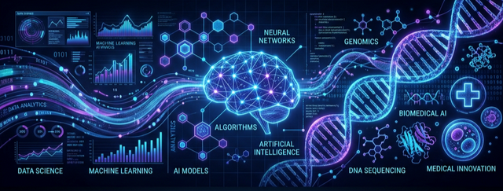
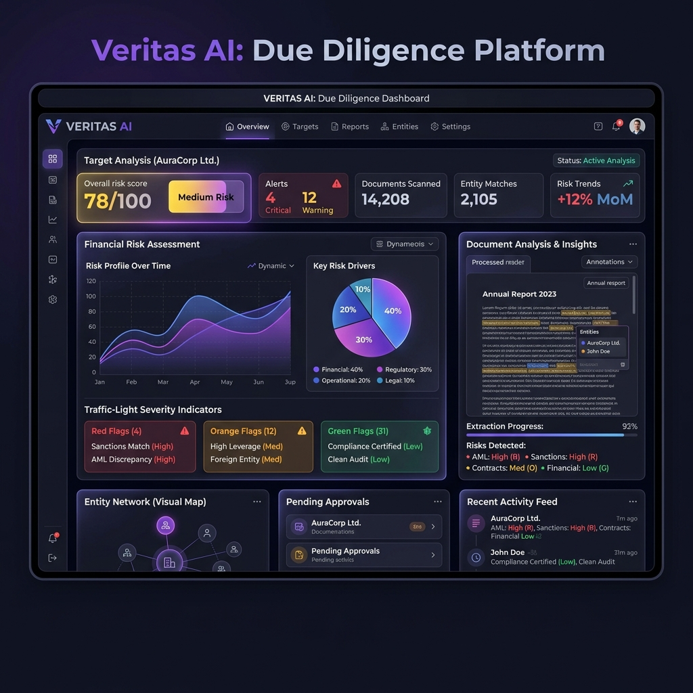

Hi there, I'm Andrés 👋

I am a Data Science student in Colombia focused on analysis and modeling using Machine Learning (ML) and Big Data techniques to reduce uncertainty in decision-making. Additionally, I am pursuing a minor in HealthTech with a strong focus on precision medicine and epigenetics.


🚀 What I Do
- 🧠 Machine Learning & Deep Learning: Development of predictive models using scikit-learn, TensorFlow, and PyTorch.
- ⚙️ Data Engineering: Design and implementation of robust ETL pipelines.
- 🗄️ Database Management: Structuring and maintaining efficient data storage solutions.
- 📊 Data Visualization & Dashboards: Creating interactive insights with Seaborn, Dash, Power BI, and Tableau.
- 🧬 HealthTech & Genomics: Applying data analytics to precision medicine, bioinformatics, and epigenetic research.
🌟 Featured Projects

An advanced Agentic RAG platform designed for automated financial and legal due diligence. Built with LangGraph, ChromaDB, and GPT-4o, it features:
- 🔍 Intelligent Document Analysis: Query rewriting and relevance grading for high-accuracy insights.
- ⚖️ Legal & Financial Risk Assessment: Structured entity extraction and automated risk scoring.
- 🚦 Traffic-Light Severity Indicators: Clear, actionable summaries of potential red flags.
🛠️ My Tech Stack
Languages


Machine Learning & Data Science


Visualization & BI


Cloud & Databases


📈 GitHub Stats
"In God we trust, all others must bring data." - W. Edwards Deming